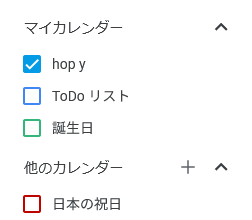
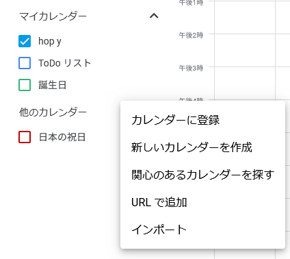
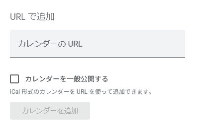
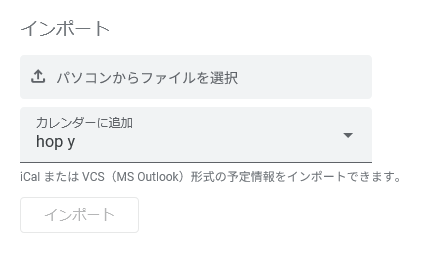

カレンダー情報の反映方法
Google Calendarの場合

1. Google Calendarのサイドバーから「＋」を選択する

2. URLをコピーした場合は「URLで追加」を(=> 3)、ファイルをダウンロードした場合は「インポート」を(=> 4)選択する

3. コピーしたURLを貼り付け「カレンダーを追加」を押す

4. ダウンロードしたファイルを選択して「インポート」を押す

1. Google Calendarのサイドバーから「＋」を選択する

2. URLをコピーした場合は「URLで追加」を(=> 3)、ファイルをダウンロードした場合は「インポート」を(=> 4)選択する

3. コピーしたURLを貼り付け「カレンダーを追加」を押す

4. ダウンロードしたファイルを選択して「インポート」を押す